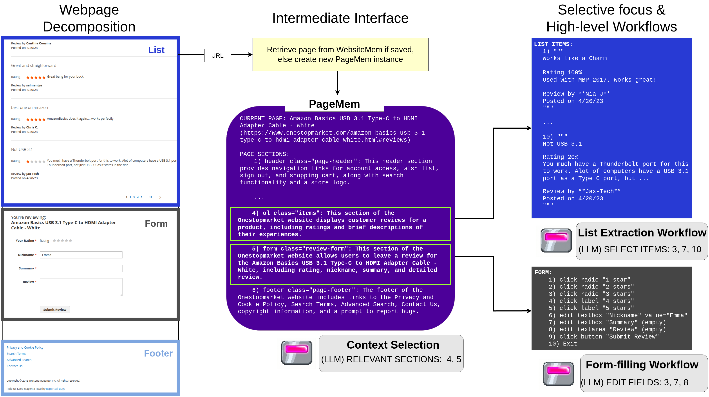
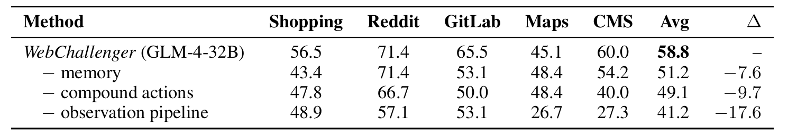
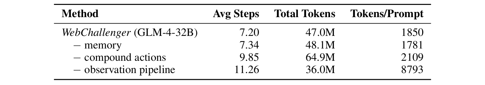
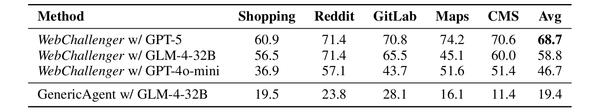

WebChallenger is a web agent framework built around PageMem, a structured page representation that supports selective observation, persistent site memory, and compound action workflows.
Without fine-tuning, WebChallenger sets new open-model state-of-the-art on four web navigation benchmarks, showing scaffolding alone can drastically improve web agent performance.

Overview of WebChallenger. (left) Each webpage is decomposed along the DOM into sections corresponding to semantic regions. (middle) Sections are indexed by short summaries to form a PageMem, cached in per-website memory. The agent skims summaries and expands only task-relevant sections. (right) Specialized multi-step workflows are executed based on section type.
Humans possess three major advantages over LLM agents when it comes to web navigation: selective attention to relevant page regions, persistent memory of website structure, and procedural fluency with common interaction patterns. WebChallenger replicates each through a dedicated architectural mechanism, all built on PageMem: a structured page representation deterministically constructed from the DOM that exposes each page as a hierarchy of semantic sections with short summaries. Because every component operates over this shared substrate, the framework generalizes across websites with no site-specific adapters.
A one-time deterministic traversal of each website builds a persistent map of pages and element behaviors that is reused across every subsequent task.
Instead of feeding a whole page to one prompt, the agent skims section summaries, expands only the task-relevant regions, then synthesizes a compact observation.
Multi-step interactions like form submission, dropdowns, and search collapse into single agent actions, keeping decisions anchored at meaningful page transitions.
Benchmark success rates (%). WebChallenger sets new open-model SOTA on four web navigation benchmarks and performs comparably to agents built on proprietary models, despite using no training. Best proprietary and open-model results are bolded. WebArena , VWA: VisualWebArena , O-M2W: Online-Mind2Web , WoA: WorkArena .
† Our VisualWebArena experiments use Qwen3-VL-4B-Instruct in place of Qwen2.5-VL-7B-Instruct.
We evaluate WebChallenger on four web navigation benchmarks chosen to span a diverse range of capabilities: WebArena (812 tasks across 6 simulated websites), VisualWebArena (910 tasks requiring visual reasoning), Online-Mind2Web (300 tasks on 136 real-world sites), and WorkArena (330 enterprise UI tasks). WebChallenger sets new open-model state-of-the-art on all four, outperforming fine-tuned baselines despite using no training of its own and approaching the performance of frontier proprietary systems at a fraction of their cost. Consistent gains across simulated and live websites, text-only and visually grounded tasks, and consumer and enterprise interfaces indicate that the framework's advantages come from structural patterns shared across the web rather than site-specific adaptation.
We run additional experiments on the 165-task WebArena-lite subset to attribute credit across the three architectural components, measure their inference cost, and test sensitivity to the backbone model.
Removing each pillar in turn shows that all three contribute meaningfully and non-redundantly. The observation pipeline carries the most weight (−17.6 points), followed by compound action workflows (−9.7) and persistent memory (−7.6).

The divide-and-conquer observation pipeline decomposes large prompts into multiple smaller prompts, removing it reduces total token usage but increases average prompt size by 4.75× (1850 → 8793 tokens). Compound action workflows collapse multi-step interactions into single decisions; removing them grows total token usage by nearly 40% (47M → 65M).

Finally, we vary the backbone to separate the contribution of the harness from that of the model. The same GLM-4-32B that reaches 58.8% in our framework scores just 19.4% in a vanilla single-prompt harness, a 39.4-point gap attributable purely to system architecture. Performance scales with backbone strength as expected (GPT-5: 68.7%, GPT-4o-mini: 46.7%), but the framework retains strong performance even with weaker models.

BibTex Code Here